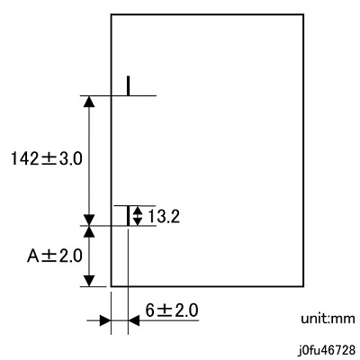
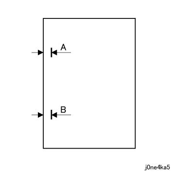
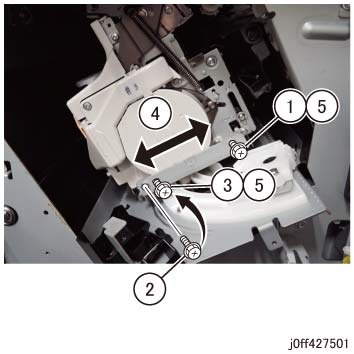

ADJ 27.6.1 Dual 装订针 Needle 歪斜/引线/导向 位置 调整 
参考 PL:PL 27.6
目的
To reduce the 装订位置 不对齐 to 0 用于 the 2 位置图 当...时 making a Dual 装订针.
请参阅 以下 用于 规格. (图 1)

图 1 is 输出 图 (侧面 2).

(图 1) j0fu46728
The A in 图 1 is 如下:
Supported 纸张 | Dimension (mm) | A +/- 2 (mm) |
|---|---|---|
B5 SEF (Straight at 前面 装订针: Corner 装订针 unavailable) | 182 | 13.4 |
8 x 10 SEF | 203.2 | 24 |
A4 SEF/A5 SEF | 210 | 27.4 |
Spanish SEF | 215 | 29.9 |
8.5 x 11/13/14 SEF, 5.5 x 8.5 LEF | 215.9 | 30.35 |
A4盖板 SEF | 223 | 33.9 |
Special A4 SEF | 226 | 35.4 |
9 x 11 SEF | 228.6 | 36.7 |
8 x 10 LEF | 254 | 49.4 |
B5 LEF, B4 SEF | 257 | 50.9 |
Executive LEF | 266.7 | 55.75 |
16K (FBTW) LEF, 8K (FBTW) SEF | 267 | 55.9 |
16K (FBCN/FBHK) LEF, 8K (FBCN/FBHK) SEF | 270 | 57.4 |
8.5/9 x 11 LEF, 11 x 15/17 SEF | 279.4 | 62.1 |
A4/A4 盖板 LEF, A3 SEF | 297 | 70.9 |
Custom 尺寸 | W | (W -155.2)/2 |
调整
[调整 的 偏差 之间 two needle positions]
Make a 复印 or 打印 和/与 以下 模式:
[Revoria 按下 E1136G, ApeosPro C810G, Apeos C8180G, Apeos 7580G, Revoria 按下 EC1100, Revoria 按下 SC180G]
号码 of 设置: 3
纸张尺寸: 选择 a 纸张尺寸 该 requires 调整.
装订针: Dual enabled
[Revoria 按下 PC1120]
编号 of Copies: 3
纸张尺寸: 选择 a 纸张尺寸 该 requires 调整.
装订针: 2 装订针 右侧 (Dual 装订针)
检查 Dual 装订位置. (图 2)
检查 宽度 of A 和 B 图中.
当...时 A > B: 移动 the Base 板 of Stapler Head 组件 towards the 左侧.
当...时 A < B: 移动 the Base 板 of Stapler Head 组件 towards the 右侧.
步骤 7 describes 如何 to 移动 the Base 板 of Stapler Head 组件 mentioned 以上.

(图 2) j0ne4ka5
确认 the 宽度 从 装订针 到 边缘 的 复印 is appropriate.
确认 A (B) = 6 +/-2 mm.
当...时 A (B) > 8 mm: 移动 the Stapler Head 组件 向右.
当...时 A (B) < 4 mm: 移动 the Stapler Head 组件 向左.
拆卸 装订针 Waste Container 组件. (PL 27.5)
拆卸 右侧 上方 Inner 盖板. (PL 27.13)
移动 the Stapler Head 组件 直到 it is positioned to be easier to work on. (图 3)
如何 to 移动 the 位置 of Base 板 of Stapler Head 组件 (图 3)
松开螺钉.
拆卸螺钉.
Reposition 螺钉.
移动 the Stapler Head 组件.
拧紧螺钉 (x2).

(图 3) ff427501
In the 相同 模式 as 步骤 1, make a 复印 和 确认 A (B) = 6 +/-2 mm. 当...时 A (B) 不是 = 6 +/-2 mm, 执行 步骤 7 再次.
[Dual 装订针 侧面 位置]
此 调整 变更 the Stapler Head 停止 位置 by changing the NVM 数据.
Make a 复印 or 打印 和/与 以下 模式:
[Revoria 按下 E1136G, ApeosPro C810G, Apeos C8180G, Apeos 7580G, Revoria 按下 EC1100, Revoria 按下 SC180G]
纸张尺寸: A4 LEF
号码 of 设置: 3
装订针: Dual
[Revoria 按下 PC1120]
纸张尺寸: A4 LEF
编号 of Copies: 3
装订针: 2 装订针 右侧 (Dual 装订针)
确认 那里 是 装订针 at A +/-2 mm 从 ...的前面 纸张. (图 1)
如果 值 不是 as 指定的, 调整 it using 以下 NVM:
Dual 装订针-前面 Movement 数量 调整 (NVM 763-324)
Increasing the 数据 移动 the 装订位置 towards the 前面.
Changing the 数据 by 1 变更 the Stapler Head 停止 位置 by 0.096 mm.
Repeat Steps 1 to 3 直到 指定值 is obtained.
[装订针 Pitch]
此 调整 变更 装订针 pitch 位置 of Dual 装订针 by changing the NVM 数据.
Make a 复印 or 打印 和/与 以下 模式:
[Revoria 按下 E1136G, ApeosPro C810G, Apeos C8180G, Apeos 7580G, Revoria 按下 EC1100, Revoria 按下 SC180G]
纸张尺寸: A4 LEF
号码 of 设置: 3
装订针: Dual
[Revoria 按下 PC1120]
纸张尺寸: A4 LEF
编号 of Copies: 3
装订针: 2 装订针 右侧 (Dual 装订针)
确认 装订针 pitch is 142 +/3 mm. (图 1)
如果 值 不是 as 指定的, 调整 it using 以下 NVM:
Dual 装订针-Dual 宽度 Movement 数量 调整 (NVM 763-325)
Increasing the 数据 移动 the 后面 装订位置 towards the 后面.
Changing the 数据 by 1 变更 装订针 pitch 位置 by 0.096 mm.
Repeat Steps 1 to 3 直到 指定值 is obtained.